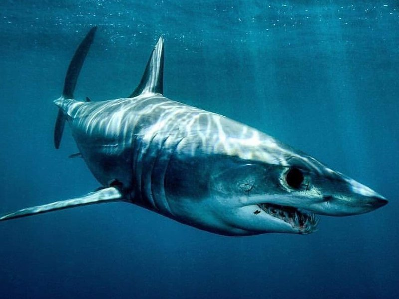
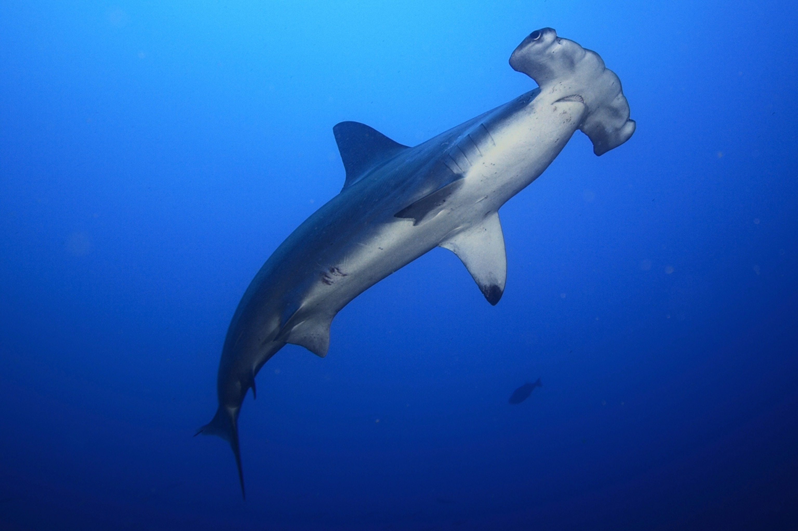

GALLERY
As I read about all these sharks, I began to notice a few that became my favorites. There were three main sharks that quickly became my favorites for different reasons: the Mako shark, the Hammerhead, and the Thresher.
Mako Shark, the fastest shark in the world.
Hammerhead Shark, one of the weirdest and coolest looking sharks.

Thresher Shark, a species I thought was cool due to its distinctive oversized tail.
i think that sharks aren't scary and are fascinating once you start to learn about them